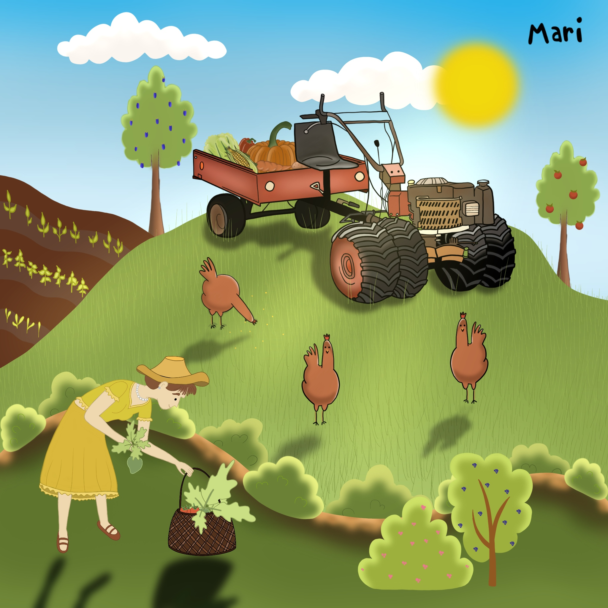

Gardening
Dakr creates machines, which can be used to manage grass similarly like it was in past centuries. The grass grows and will be cut at the end of June, when plants are seeded, does run from the forest, butterflies with other bugs emerge, and bees collect nectar from flowers.
After cutting the grass, new grass will grow quickly with sufficient moisture in the soil. This grass can be used as food for animals instead of the "spinach" from grass-cutter.
